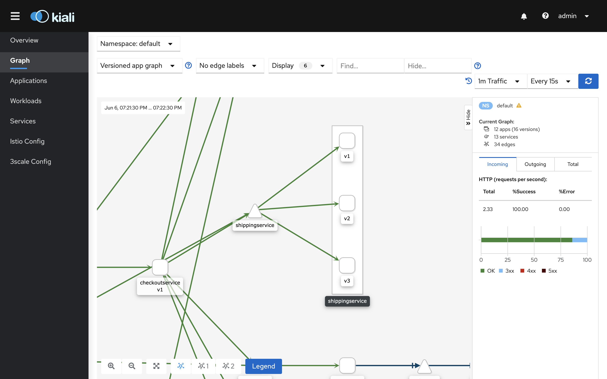
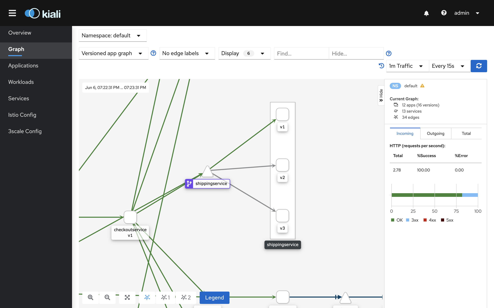

Traffic routing
This chapter presents how to configure version routing between services in the mesh.
Outline
In this chapter you will learn:
- What are
DestinationRuleandVirtualServicepolicies. - How to route the traffic to a specific service version.
Walkthrough
Open the Kiali dashboard:
$ istioctl dashboard kiali
Then, switch to the graph view and select Versioned app graph type from the graph dropdown. It should display a similar structure:

Note that due to multiple versions of some application services, traffic is distributed to all versions using Round Robin balancing algorithm. In case, each service version implements different business logic, balancing traffic to all versions can potentially lead to undesirable side effects and harm user experience. Typically, we should strive to handle user traffic only through one version of the service.
Route traffic to a specific app version
Let's start with the shippingservice.
First, inspect the shippingservice deployments:
$ kubectl -n default describe deploy shippingservice-v1
Name: shippingservice-v1
Namespace: default
...
Pod Template:
Labels: app=shippingservice
version=v1
...
$ kubectl -n default describe deploy shippingservice-v2
Name: shippingservice-v2
Namespace: default
...
Pod Template:
Labels: app=shippingservice
version=v2
...
Note that pods produced by these deployments have labels determining the service version: version=v1 and version=v2.
In order to enforce routing the user traffic to version v1 of the shipping service, apply the DestinationRule and VirtualService policies:
$ kubectl -n default apply -f ./release/istio/shippingservice-dr.yaml
destinationrule.networking.istio.io/shippingservice created
$ kubectl -n default apply -f ./release/istio/shippingservice-vs.yaml
virtualservice.networking.istio.io/shippingservice created
The former uses pod labels to specify named service subsets which group service endpoints by version:
$ kubectl -n default describe dr shippingservice
Name: shippingservice
Namespace: default
...
Spec:
Host: shippingservice
Subsets:
Labels:
Version: v1
Name: v1
Labels:
Version: v2
Name: v2
Labels:
Version: v3
Name: v3
The latter uses the defined service subsets to route the traffic to the proper service version:
$ kubectl -n default describe vs shippingservice
Name: shippingservice
Namespace: default
...
Spec:
Hosts:
shippingservice
Http:
Route:
Destination:
Host: shippingservice
Subset: v1
After applying the policies, the traffic should be routed only to the version v1 of the shipping service:

It might take a while until the configuration is distributed to the proxies and Kiali infers new comunication pattern from collected metrics.
The service node in the graph should be marked with a purple virtual service icon.
Exercises
Apply
DestinationRuleandVirtualServicepolicies to all services deployed in the service mesh regardless of how many versions each service provides. Route the traffic to versionv1of each service.Route
productcatelogtraffic to versionv2.